CODING AGENTS AS PIXEL WORLD MODELS
traex/DeepSeek-V4.1-Flash · 0075
点击播放 · 原生 RGB 像素
逐轮保存的候选
回放视频、检查图与代码变化。
每份候选均可单独播放。实际图片检查记录在下方工具轨迹中。
候选 01播放与检查图
点击播放 · 原生 RGB 像素

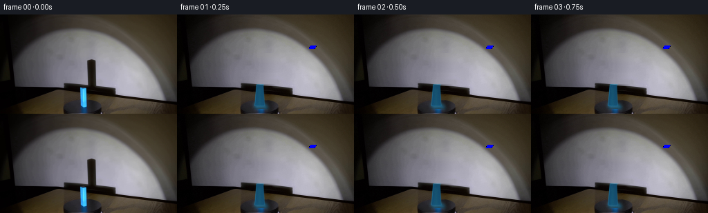
展开代码变化
--- 上一保存版本
+++ 本次保存版本
@@ -0,0 +1,306 @@
+"""Procedural continuation of the turntable prism shot."""
+
+from pathlib import Path
+
+import cv2
+import numpy as np
+from PIL import Image
+
+import artifact_io
+
+
+CASE_DIR = Path(__file__).resolve().parent
+W, H, N, FPS = 256, 144, 20, 4
+
+
+def smoothstep(edge0, edge1, value):
+ t = np.clip((value - edge0) / (edge1 - edge0), 0.0, 1.0)
+ return t * t * (3.0 - 2.0 * t)
+
+
+def lighting_plate(source):
+ """Remove the photographed prism and its shadow from the studio plate."""
+ bgr = cv2.cvtColor(source, cv2.COLOR_RGB2BGR)
+ mask = np.zeros((H, W), np.uint8)
+ cv2.rectangle(mask, (123, 55), (143, 101), 255, -1)
+ cv2.rectangle(mask, (110, 98), (130, 135), 255, -1)
+ cleaned = cv2.inpaint(bgr, mask, 4, cv2.INPAINT_TELEA)
+ cleaned = cv2.cvtColor(cleaned, cv2.COLOR_BGR2RGB).astype(np.float32)
+
+ # Restore the gentle cylindrical falloff of the wall across the inpainted
+ # shadow column. The wall brightens downward and toward screen right.
+ yy, xx = np.mgrid[:H, :W]
+ wall = (yy >= 56) & (yy < 104) & (xx >= 122) & (xx <= 144)
+ ref = source.astype(np.float32)
+ for y in range(56, 104):
+ left = ref[y, 118:123].mean(axis=0)
+ right = ref[y, 143:149].mean(axis=0)
+ target = left[None, :] * (1.0 - np.linspace(0, 1, 23))[:, None]
+ target += right[None, :] * np.linspace(0, 1, 23)[:, None]
+ cleaned[y, 122:145] = target
+
+ # The table and turntable are nearly smooth; retain their existing grain
+ # while replacing the overly broad inpaint smear beneath the prism.
+ for y in range(104, 137):
+ left = ref[y, 105:111].mean(axis=0)
+ right = ref[y, 130:136].mean(axis=0)
+ cleaned[y, 110:131] = (
+ left[None, :] * (1.0 - np.linspace(0, 1, 21))[:, None]
+ + right[None, :] * np.linspace(0, 1, 21)[:, None]
+ )
+
+ # Keep the source exact outside the edited region.
+ untouched = ~(wall | ((yy >= 104) & (yy < 137) & (xx >= 110) & (xx < 131)))
+ cleaned[untouched] = ref[untouched]
+ return np.clip(cleaned, 0, 255)
+
+
+def project(points, angle):
+ """Project prism-local points into the low-resolution camera."""
+ x, y, z = points[..., 0], points[..., 1], points[..., 2]
+ ca, sa = np.cos(angle), np.sin(angle)
+ xr = ca * x - sa * z
+ zr = sa * x + ca * z
+ # Mild perspective, calibrated to the 13 px base and 30 px height.
+ scale = 16.8 / (1.0 + 0.030 * zr + 0.025 * y)
+ u = 120.25 + xr * scale
+ v = 132.35 - y * 1.67 + zr * 0.45
+ return u, v, scale, xr, zr
+
+
+def prism_geometry(angle):
+ """Return four visible side quads and the top quad."""
+ half_x, half_z, height = 0.43, 0.43, 18.3
+ corners = np.array(
+ [
+ [-half_x, 0.0, -half_z],
+ [half_x, 0.0, -half_z],
+ [half_x, 0.0, half_z],
+ [-half_x, 0.0, half_z],
+ ],
+ np.float32,
+ )
+ top = corners.copy()
+ top[:, 1] = height
+
+ sides = []
+ normals = []
+ for i in range(4):
+ j = (i + 1) % 4
+ p = np.array([corners[i], corners[j], top[j], top[i]], np.float32)
+ sides.append(p)
+ normal = np.array(
+ [
+ (corners[j, 2] + top[j, 2] - corners[i, 2] - top[i, 2]) / 2,
+ 0.0,
+ (corners[i, 0] + top[i, 0] - corners[j, 0] - top[j, 0]) / 2,
+ ],
+ np.float32,
+ )
+ normals.append(normal / np.linalg.norm(normal))
+ return corners, top, sides, np.array(normals)
+
+
+def clip_polygon(points, inside, intersect):
+ output = []
+ if not points:
+ return output
+ previous = points[-1]
+ previous_in = inside(previous)
+ for current in points:
+ current_in = inside(current)
+ if current_in:
+ if not previous_in:
+ output.append(intersect(previous, current))
+ output.append(current)
+ elif previous_in:
+ output.append(intersect(previous, current))
+ previous, previous_in = current, current_in
+ return output
+
+
+def clip_near(poly):
+ near = 0.12
+ return clip_polygon(
+ [tuple(p) for p in poly],
+ lambda p: p[2] >= near,
+ lambda a, b: tuple(
+ a[i] + (b[i] - a[i]) * (near - a[2]) / (b[2] - a[2])
+ for i in range(3)
+ ),
+ )
+
+
+def shadow_polygon(corners, top, light, wall_y=0.0):
+ """Project the prism silhouette along the spotlight direction to a plane."""
+ source = np.vstack([corners, top])
+ result = []
+ for point in source:
+ direction = point - light
+ if abs(direction[1]) < 1e-4:
+ continue
+ t = (wall_y - point[1]) / direction[1]
+ if t > 0:
+ result.append(point + t * direction)
+ if len(result) < 3:
+ return None
+ pts = np.array(result, np.float32)[:, [0, 2]]
+ hull = cv2.convexHull(pts).reshape(-1, 2)
+ return hull
+
+
+def wall_shadow_mask(angle):
+ # The wall is behind the turntable. Coordinates are in the wall plane.
+ light = np.array([-5.0, 29.0, -20.0], np.float32)
+ corners, top, _, _ = prism_geometry(angle)
+ hull = shadow_polygon(corners, top, light)
+ if hull is None:
+ return np.zeros((H, W), np.uint8)
+
+ # Fit a compact plane-to-screen transform to the observed shadow: its
+ # near edge is around y=102, it reaches y=66, and is 11-13 px wide.
+ u = 132.6 + 3.25 * hull[:, 0] + 1.05 * hull[:, 1]
+ v = 102.2 - 1.63 * hull[:, 1] + 0.10 * hull[:, 0]
+ poly = np.round(np.stack([u, v], axis=1) * 16).astype(np.int32)
+ canvas = np.zeros((H * 16, W * 16), np.uint8)
+ cv2.fillPoly(canvas, [poly], 255, cv2.LINE_AA)
+ canvas = cv2.GaussianBlur(canvas, (0, 0), 2.0)
+ return cv2.resize(canvas, (W, H), interpolation=cv2.INTER_AREA)
+
+
+def table_shadow_mask(angle):
+ light = np.array([-5.0, 26.0, -19.0], np.float32)
+ corners, top, _, _ = prism_geometry(angle)
+ hull = shadow_polygon(corners, top, light, wall_y=0.0)
+ if hull is None:
+ return np.zeros((H, W), np.uint8)
+ u = 120.5 + 12.0 * hull[:, 0] + 5.1 * hull[:, 1]
+ v = 132.5 + 1.2 * hull[:, 1] - 1.4 * hull[:, 0]
+ poly = np.round(np.stack([u, v], axis=1) * 16).astype(np.int32)
+ canvas = np.zeros((H * 16, W * 16), np.uint8)
+ cv2.fillPoly(canvas, [poly], 255, cv2.LINE_AA)
+ canvas = cv2.GaussianBlur(canvas, (0, 0), 2.8)
+ return cv2.resize(canvas, (W, H), interpolation=cv2.INTER_AREA)
+
+
+def polygon_mask(poly, blur=0.0):
+ canvas = np.zeros((H * 8, W * 8), np.uint8)
+ p = np.round(np.asarray(poly) * 8).astype(np.int32)
+ cv2.fillPoly(canvas, [p], 255, cv2.LINE_AA)
+ if blur:
+ canvas = cv2.GaussianBlur(canvas, (0, 0), blur * 8)
+ return cv2.resize(canvas, (W, H), interpolation=cv2.INTER_AREA).astype(np.float32) / 255
+
+
+def draw_prism(frame, angle, glow):
+ corners, top, sides, normals = prism_geometry(angle)
+ ca, sa = np.cos(angle), np.sin(angle)
+ camera_dir = np.array([0.0, 0.28, -1.0], np.float32)
+ camera_dir /= np.linalg.norm(camera_dir)
+ light_dir = np.array([0.20, 0.62, -0.76], np.float32)
+ light_dir /= np.linalg.norm(light_dir)
+
+ # Contact shade and cyan spill on the black turntable.
+ spill = polygon_mask(
+ [
+ (111, 130), (116, 128), (120, 129), (129, 130),
+ (132, 137), (113, 137),
+ ],
+ 2.2,
+ )
+ contact = polygon_mask([(112, 130), (129, 130), (132, 137), (112, 137)], 1.3)
+ frame[:, :, 0] *= 1.0 - 0.48 * contact
+ frame[:, :, 1] *= 1.0 - 0.40 * contact
+ frame[:, :, 2] *= 1.0 - 0.30 * contact
+ spill_color = np.array([18.0, 76.0, 100.0], np.float32)
+ frame += spill[..., None] * spill_color[None, None, :] * (0.72 + 0.28 * glow)
+
+ # Draw faces back-to-front. Every face receives different light so the
+ # square section reads as a real rotating solid rather than a decal.
+ visible = []
+ for poly, normal in zip(sides, normals):
+ rotated_normal = np.array(
+ [ca * normal[0] + sa * normal[2], normal[1], -sa * normal[0] + ca * normal[2]],
+ np.float32,
+ )
+ facing = float(np.dot(rotated_normal, -camera_dir))
+ if facing <= -0.03:
+ continue
+ u, v, _, _, _ = project(poly, angle)
+ screen_poly = np.stack([u, v], axis=1)
+ visible.append((screen_poly, rotated_normal, facing))
+
+ # Top face.
+ u, v, _, _, _ = project(top, angle)
+ top_poly = np.stack([u, v], axis=1)
+ visible.append((top_poly, np.array([0.0, 1.0, 0.0]), 1.0))
+
+ if not visible:
+ return
+ centers = [np.mean(poly, axis=0)[1] for poly, _, _ in visible]
+ order = np.argsort(centers)
+ for index in order:
+ poly, normal, facing = visible[index]
+ mask = polygon_mask(poly, 0.42)
+ edge = np.clip(4.0 * mask * (1.0 - mask), 0, 1)
+ diffuse = max(0.0, float(np.dot(normal, light_dir)))
+ rim = max(0.0, float(np.dot(normal, np.array([-0.7, 0.1, -0.7]))))
+ if normal[1] > 0.7:
+ base = np.array([54.0, 182.0, 241.0], np.float32)
+ shade = 0.76 + 0.12 * diffuse
+ else:
+ base = np.array([43.0, 169.0, 244.0], np.float32)
+ shade = 0.47 + 0.53 * diffuse + 0.15 * rim
+ color = base * shade
+
+ # Interior vertical falloff and a narrow specular streak on the
+ # brightest face.
+ ys, xs = np.mgrid[:H, :W]
+ x0, x1 = float(poly[:, 0].min()), float(poly[:, 0].max())
+ center_x = (x0 + x1) * 0.5
+ across = np.clip((xs - x0) / max(1.0, x1 - x0), 0, 1)
+ vertical = 0.93 + 0.07 * np.clip((ys - 104.0) / 30.0, 0, 1)
+ spec = np.exp(-((across - 0.45) / 0.18) ** 2) * smoothstep(105, 109, ys)
+ spec *= (1.0 - smoothstep(129, 134, ys)) * (0.12 + 0.2 * diffuse)
+ face = color[None, None, :] * vertical[..., None]
+ face += spec[..., None] * np.array([25.0, 58.0, 18.0], np.float32)
+
+ frame[:] = frame * (1.0 - mask[..., None]) + face * mask[..., None]
+ frame += edge[..., None] * np.array([3.0, 15.0, 18.0], np.float32)
+
+ # Soft cyan bloom, strongest around the front and left edge.
+ u, v, _, _, _ = project(np.vstack([corners, top]), angle)
+ bloom = polygon_mask(np.stack([u, v], axis=1), 1.8)
+ bloom = np.clip(bloom - polygon_mask(np.stack([u, v], axis=1), 0.0), 0, 1)
+ frame += bloom[..., None] * np.array([4.0, 20.0, 25.0], np.float32) * glow
+
+
+def render():
+ source = np.asarray(Image.open(CASE_DIR / "first_frame.png").convert("RGB"), np.uint8)
+ plate = lighting_plate(source)
+ frames = np.empty((N, H, W, 3), np.uint8)
+ rng = np.random.default_rng(75)
+
+ # One clockwise revolution across five seconds; frame zero is authored to
+ # reproduce the photographed starting pose.
+ angles = np.linspace(0.0, np.pi / 2, N, endpoint=False, dtype=np.float32)
+ for index, angle in enumerate(angles):
+ frame = plate.copy()
+ shadow = wall_shadow_mask(angle)
+ table_shadow = table_shadow_mask(angle)
+ shadow_strength = 0.84 + 0.025 * np.sin(index * 0.7)
+ frame *= (1.0 - shadow_strength * shadow)[..., None]
+ frame *= (1.0 - 0.20 * table_shadow)[..., None]
+ frame[:, :, 2] *= 1.0 - 0.07 * shadow
+ draw_prism(frame, angle, 1.0 if index == 0 else 0.94)
+ frame += rng.normal(0.0, 0.55, (H, W, 1))
+ frames[index] = np.clip(np.rint(frame), 0, 255).astype(np.uint8)
+
+ # The contract requires an exact photographic first frame.
+ frames[0] = source
+ artifact_io.save(frames, CASE_DIR)
+ return frames
+
+
+if __name__ == "__main__":
+ render()
候选 02播放与检查图
点击播放 · 原生 RGB 像素
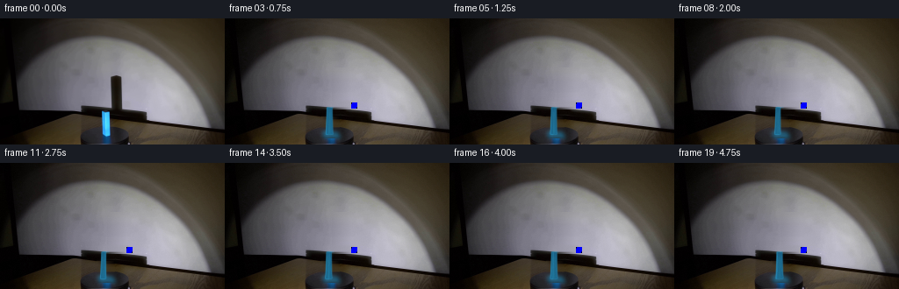
展开代码变化
--- 上一保存版本
+++ 本次保存版本
@@ -62,9 +62,9 @@
xr = ca * x - sa * z
zr = sa * x + ca * z
# Mild perspective, calibrated to the 13 px base and 30 px height.
- scale = 16.8 / (1.0 + 0.030 * zr + 0.025 * y)
+ scale = 9.4 / (1.0 + 0.025 * zr + 0.016 * y)
u = 120.25 + xr * scale
- v = 132.35 - y * 1.67 + zr * 0.45
+ v = 132.35 - y * 1.67 + zr * 0.18
return u, v, scale, xr, zr
@@ -159,8 +159,10 @@
# Fit a compact plane-to-screen transform to the observed shadow: its
# near edge is around y=102, it reaches y=66, and is 11-13 px wide.
- u = 132.6 + 3.25 * hull[:, 0] + 1.05 * hull[:, 1]
- v = 102.2 - 1.63 * hull[:, 1] + 0.10 * hull[:, 0]
+ # Perspective compresses the far end of the shadow by about 2x.
+ depth = np.clip(hull[:, 1] - 33.04, 0.0, None)
+ u = 128.0 + 2.25 * hull[:, 0] + 0.20 * depth
+ v = 102.0 - 2.40 * depth + 0.03 * hull[:, 0]
poly = np.round(np.stack([u, v], axis=1) * 16).astype(np.int32)
canvas = np.zeros((H * 16, W * 16), np.uint8)
cv2.fillPoly(canvas, [poly], 255, cv2.LINE_AA)
@@ -246,11 +248,11 @@
diffuse = max(0.0, float(np.dot(normal, light_dir)))
rim = max(0.0, float(np.dot(normal, np.array([-0.7, 0.1, -0.7]))))
if normal[1] > 0.7:
- base = np.array([54.0, 182.0, 241.0], np.float32)
- shade = 0.76 + 0.12 * diffuse
+ base = np.array([57.0, 188.0, 246.0], np.float32)
+ shade = 0.84 + 0.12 * diffuse
else:
- base = np.array([43.0, 169.0, 244.0], np.float32)
- shade = 0.47 + 0.53 * diffuse + 0.15 * rim
+ base = np.array([48.0, 180.0, 247.0], np.float32)
+ shade = 0.58 + 0.48 * diffuse + 0.18 * rim
color = base * shade
# Interior vertical falloff and a narrow specular streak on the
候选 03播放与检查图
点击播放 · 原生 RGB 像素

展开代码变化
--- 上一保存版本
+++ 本次保存版本
@@ -199,7 +199,7 @@
ca, sa = np.cos(angle), np.sin(angle)
camera_dir = np.array([0.0, 0.28, -1.0], np.float32)
camera_dir /= np.linalg.norm(camera_dir)
- light_dir = np.array([0.20, 0.62, -0.76], np.float32)
+ light_dir = np.array([-0.72, 0.38, -0.58], np.float32)
light_dir /= np.linalg.norm(light_dir)
# Contact shade and cyan spill on the black turntable.
@@ -252,7 +252,7 @@
shade = 0.84 + 0.12 * diffuse
else:
base = np.array([48.0, 180.0, 247.0], np.float32)
- shade = 0.58 + 0.48 * diffuse + 0.18 * rim
+ shade = 0.70 + 0.38 * diffuse + 0.16 * rim
color = base * shade
# Interior vertical falloff and a narrow specular streak on the
候选 04播放与检查图
点击播放 · 原生 RGB 像素

展开代码变化
--- 上一保存版本
+++ 本次保存版本
@@ -131,9 +131,15 @@
)
-def shadow_polygon(corners, top, light, wall_y=0.0):
+def shadow_polygon(corners, top, light, angle=0.0, wall_y=0.0):
"""Project the prism silhouette along the spotlight direction to a plane."""
source = np.vstack([corners, top])
+ ca, sa = np.cos(angle), np.sin(angle)
+ source = source.copy()
+ source[:, 0], source[:, 2] = (
+ ca * source[:, 0] - sa * source[:, 2],
+ sa * source[:, 0] + ca * source[:, 2],
+ )
result = []
for point in source:
direction = point - light
@@ -153,7 +159,7 @@
# The wall is behind the turntable. Coordinates are in the wall plane.
light = np.array([-5.0, 29.0, -20.0], np.float32)
corners, top, _, _ = prism_geometry(angle)
- hull = shadow_polygon(corners, top, light)
+ hull = shadow_polygon(corners, top, light, angle=angle)
if hull is None:
return np.zeros((H, W), np.uint8)
@@ -173,7 +179,7 @@
def table_shadow_mask(angle):
light = np.array([-5.0, 26.0, -19.0], np.float32)
corners, top, _, _ = prism_geometry(angle)
- hull = shadow_polygon(corners, top, light, wall_y=0.0)
+ hull = shadow_polygon(corners, top, light, angle=angle, wall_y=0.0)
if hull is None:
return np.zeros((H, W), np.uint8)
u = 120.5 + 12.0 * hull[:, 0] + 5.1 * hull[:, 1]
可观测工具轨迹
实际执行的命令与返回图片。
命令 1exit 0
/bin/bash -c "pwd && rg --files -g '"'!*__pycache__*'"' -g '"'!*.pyc'"'"
命令 2exit 0
/bin/bash -c "sed -n '1,240p' GENERATION_RULES.md"
命令 3exit 0
/bin/bash -c "sed -n '1,240p' prompt.txt"
命令 4exit 0
/bin/bash -c "sed -n '1,260p' artifact_io.py"
命令 5exit 0
/bin/bash -c "python - <<'PY'
from PIL import Image
im=Image.open('first_frame.png')
print(im.mode, im.size)
print(im.getpixel((0,0)), im.getpixel((128,72)), im.getpixel((128,143)))
PY"命令 6exit 0
/bin/bash -c "sed -n '1,220p' player_template.html"
命令 7exit 0
/bin/bash -c "python - <<'PY'
from PIL import Image
im=Image.open('first_frame.png')
im.crop((55,45,205,144)).resize((900,594), Image.Resampling.NEAREST).save('.tmp/crop_nearest.png')
im.crop((55,45,205,144)).resize((900,594), Image.Resampling.BICUBIC).save('.tmp/crop_bicubic.png')
PY"命令 8exit 0
/bin/bash -c "python - <<'PY'
from PIL import Image
import numpy as np
im=np.array(Image.open('first_frame.png'))
# sample crops as ascii brightness/color class
for y in range(90,136,2):
line=''
for x in range(90,170,2):
r,g,b=im[y:y+2,x:x+2].mean((0,1))
if b>80 and b>r*1.8 and b>g*1.1: c='B'
elif g>50 and b>40: c='C'
elif r<20 and g<20 and b<20: c='#'
elif r<55: c='s'
elif r<90: c='.'
else: c=' '
line+=c
print(f'{y:3d} {line}')
print('block rows extents colors')
for y in [97,98,99,100,105,110,115,120,125,129,130,131]:
row=im[y]
idx=np.where((row[:,2]>55)&(row[:,2]>row[:,0]*1.5)&(row[:,1]>row[:,0]*1.2))[0]
print(y, (idx.min(),idx.max()) if len(idx) else None, [(x,tuple(row[x])) for x in range(112,132,2)])
PY"命令 9exit 0
/bin/bash -c "python - <<'PY'
from PIL import Image, ImageEnhance
im=Image.open('first_frame.png')
im.resize((1024,576), Image.Resampling.NEAREST).save('.tmp/full_nearest.png')
ImageEnhance.Brightness(im).enhance(2.5).resize((1024,576), Image.Resampling.BICUBIC).save('.tmp/full_bright.png')
PY"命令 10exit 0
/bin/bash -c "python - <<'PY'
from PIL import Image, ImageEnhance, ImageFilter
im=Image.open('first_frame.png')
# boost chroma and bright to see regions
im=ImageEnhance.Brightness(im).enhance(3.5)
im=ImageEnhance.Color(im).enhance(3)
im=im.filter(ImageFilter.UnsharpMask(radius=2, percent=200, threshold=2))
im.resize((1024,576), Image.Resampling.NEAREST).save('.tmp/full_boost.png')
PY"命令 11exit 0
/bin/bash -c "python - <<'PY'
from PIL import Image
import numpy as np
im=np.array(Image.open('first_frame.png')).astype(float)
# shadow detection rough: dark region in illuminated wall
for y in range(100,116,2):
vals=[]
for x in range(95,171):
r,g,b=im[y,x]
if (r+g+b)/3 < 32:
vals.append(x)
# groups
gs=[]
if vals:
st=pr=vals[0]
for v in vals[1:]:
if v>pr+1: gs.append((st,pr)); st=v
pr=v
gs.append((st,pr))
print(y,gs)
PY"命令 12exit 0
/bin/bash -c "python - <<'PY' for name in ['cv2','scipy','skimage']: try: m=__import__(name); print(name, getattr(m,'__version__','ok')) except Exception as e: print(name, 'missing') PY"
命令 13exit 0
/bin/bash -c "python - <<'PY'
from PIL import Image
import numpy as np
im=np.array(Image.open('first_frame.png'))
# print mean row RGB outside block for row ranges
for y in range(98,137,4):
print(y, 'left', np.round(im[y,108:114].mean(0),1), 'right',np.round(im[y,127:134].mean(0),1), 'block', np.round(im[y,117:124].mean(0),1))
PY"命令 14exit 0
/bin/bash -c 'git status --short 2>/dev/null || true'
命令 15exit 0
/bin/bash -c "python - <<'PY'
from PIL import Image
import numpy as np
im=np.array(Image.open('first_frame.png'))
# luminance ascii around wall+pedestal
for y in range(88,144,2):
s=''
for x in range(80,182,2):
v=im[y:y+2,x:x+2].mean()
s += ' .:-=+*#%@'[min(9,int(v/28))]
print(f'{y:3d} {s}')
PY"命令 16exit 0
/bin/bash -c "python - <<'PY'
import cv2, numpy as np
from PIL import Image
im=cv2.imread('first_frame.png')
mask=np.zeros(im.shape[:2],np.uint8)
# vertical shadow (above platform shadow)
mask[60:108,121:133]=255
# blue object incl glow, split at platform edge
mask[91:130,110:132]=255
mask[130:137,112:130]=255
for rad in [3,6,10]:
p=cv2.inpaint(im,mask,rad,cv2.INPAINT_TELEA)
cv2.imwrite(f'.tmp/plate{rad}.png',p)
# bright for inspection
q=np.clip(p.astype(float)*3,0,255).astype(np.uint8)
cv2.imwrite(f'.tmp/plate{rad}_bright.png',q)
PY"命令 17exit 0
/bin/bash -c "python - <<'PY'
import cv2, numpy as np
im=cv2.imread('first_frame.png')
# use dark regions to inspect silhouette in false color
lum=im.mean(2)
# print values grid y100..138 x118..136 every px
for y in range(98,138):
vals=[]
for x in range(116,137):
r,g,b=im[y,x]; vals.append(int((int(r)+int(g)+int(b))/3))
print(y, ' '.join(f'{v:3d}' for v in vals))
PY"命令 18exit 0
/bin/bash -c "python - <<'PY'
from PIL import Image, ImageEnhance, ImageFilter
im=Image.open('first_frame.png')
# crop object, upscale and brighten
c=im.crop((105,75,145,140))
c=ImageEnhance.Brightness(c).enhance(4)
c=ImageEnhance.Color(c).enhance(2)
c.resize((400,650),Image.Resampling.NEAREST).save('.tmp/object.png')
PY"命令 19exit 0
/bin/bash -c "python - <<'PY'
import cv2, numpy as np
from PIL import Image
im=cv2.imread('first_frame.png')
mask=np.zeros(im.shape[:2],np.uint8)
# shadow rect, soft full region
cv2.rectangle(mask,(123,55),(143,100),255,-1)
# block including glow and contact
cv2.rectangle(mask,(110,98),(130,135),255,-1)
for rad in [2,4,7]:
p=cv2.inpaint(im,mask,rad,cv2.INPAINT_TELEA)
cv2.imwrite(f'.tmp/plate_r{rad}.png',p)
q=np.clip(p.astype(float)*3,0,255).astype(np.uint8)
cv2.imwrite(f'.tmp/plate_r{rad}_bright.png',q)
PY"命令 20exit 0
/bin/bash -c "python - <<'PY'
from PIL import Image
im=Image.open('first_frame.png')
im.crop((90,75,175,140)).resize((850,650), Image.Resampling.NEAREST).save('.tmp/setup.png')
PY"命令 21exit 0
/bin/bash -c "python - <<'PY'
from PIL import Image
import numpy as np
im=np.array(Image.open('first_frame.png')).astype(float)
# luminance columns across shadow at y=80,90,96
for y in [60,70,80,90,96,100,102]:
vals=im[y,:, :].mean(1)
# find low points x 115..150
print(y, [(x,round(vals[x],1)) for x in range(116,151,2)])
PY"命令 22exit 0
/bin/bash -c "python - <<'PY'
from PIL import Image
im=Image.open('first_frame.png')
im.crop((118,50,148,140)).resize((360,1080), Image.Resampling.NEAREST).save('.tmp/shadow.png')
PY"命令 23exit 0
/bin/bash -c "python - <<'PY'
from PIL import Image
import numpy as np
im=np.array(Image.open('first_frame.png')).astype(float)
# examine colors around top of block
for y in range(98,108):
print('y',y)
for x in range(108,132,2):
print(x, tuple(im[y,x].astype(int)), end='; ')
print()
PY"命令 24exit 0
/bin/bash -c "python - <<'PY'
from PIL import Image
import numpy as np
im=np.array(Image.open('first_frame.png')).astype(float)
# mean local wall brightness at y 55,70,85,100 x 140-180
for y in [50,55,60,65,70,75,80,85,90,95,100]:
print(y, np.round(im[y,145:181].mean(0),1))
PY"命令 25exit 0
/bin/bash -c "python - <<'PY'
from PIL import Image, ImageEnhance
im=Image.open('first_frame.png')
c=im.crop((80,118,180,144))
c=ImageEnhance.Brightness(c).enhance(4)
c=ImageEnhance.Color(c).enhance(2)
c.resize((1000,260),Image.Resampling.NEAREST).save('.tmp/platform.png')
PY"命令 26exit 0
/bin/bash -c "python - <<'PY'
from PIL import Image
import numpy as np
im=np.array(Image.open('first_frame.png')).astype(float)
# print dark threshold extents of vertical shadow for x120..145 each row
for y in range(56,108,2):
row=im[y].mean(1)
idx=np.where((np.arange(256)>=120)&(np.arange(256)<=145)&(row<80))[0]
print(y, (idx.min(),idx.max()) if len(idx) else None)
PY"命令 27exit 0
/bin/bash -c 'python generate.py'
命令 28exit 0
/bin/bash -c "python - <<'PY'
from PIL import Image
for i in [1,3,7,11,15,19]:
im=Image.open(f'frames/{i:02d}.png').crop((90,50,180,140))
im.resize((720,720),Image.Resampling.NEAREST).save(f'.tmp/f{i:02d}.png')
PY"命令 29exit 0
/bin/bash -c "python - <<'PY' import generate as g import numpy as np for i,a in enumerate(np.linspace(0,np.pi/2,20,endpoint=False)): m=g.wall_shadow_mask(a) ys,xs=np.where(m>50) if len(ys): print(i, round(float(a),2), (xs.min(),xs.max(),ys.min(),ys.max()), round(float(m.max()),2)) PY"
命令 30exit 0
/bin/bash -c "python - <<'PY'
import numpy as np
import generate as g
for a in [0,.2,.5,1,1.4]:
c,t,s,n=g.prism_geometry(a)
hull=g.shadow_polygon(c,t,np.array([-5,29,-20],np.float32))
print('a',a,'hull',hull)
PY"命令 31exit 0
/bin/bash -c "python - <<'PY'
import generate as g, numpy as np
c,t,s,n=g.prism_geometry(0)
print('corners',c)
print('top',t)
light=np.array([-5,29,-20],np.float32)
for p in np.vstack([c,t]):
d=p-light; q=p+(0-p[1])/d[1]*d
print(p,'->',q)
PY"命令 32exit 0
/bin/bash -c "python - <<'PY' import generate as g, numpy as np m=g.wall_shadow_mask(0) print(m.shape,m.dtype,m.min(),m.max(),np.argwhere(m>10)[:10]) PY"
命令 33exit 0
/bin/bash -c "python - <<'PY' import generate as g, numpy as np, cv2 c,t,s,n=g.prism_geometry(0) h=g.shadow_polygon(c,t,np.array([-5,29,-20],np.float32)) u=132.6+3.25*h[:,0]+1.05*h[:,1] v=102.2-1.63*h[:,1]+0.10*h[:,0] print(np.c_[u,v]) PY"
命令 34exit 0
/bin/bash -c "python - <<'PY' import generate as g, numpy as np for i,a in enumerate(np.linspace(0,np.pi/2,20,endpoint=False)): m=g.wall_shadow_mask(a) ys,xs=np.where(m>50) if len(ys): print(i, round(float(a),2), (xs.min(),xs.max(),ys.min(),ys.max())) PY"
命令 35exit 0
/bin/bash -c "python - <<'PY' import generate as g, numpy as np for i,a in enumerate(np.linspace(0,np.pi/2,20,endpoint=False)): m=g.wall_shadow_mask(a) ys,xs=np.where(m>50) if len(ys): print(i, round(float(a),2), (xs.min(),xs.max(),ys.min(),ys.max())) PY"
命令 36exit 0
/bin/bash -c "python - <<'PY' import generate as g, numpy as np c,t,s,n=g.prism_geometry(0) h=g.shadow_polygon(c,t,np.array([-5,29,-20],np.float32)) u=132.3+2.25*h[:,0]+.2*h[:,1]; v=102.2-1.46*h[:,1]+.03*h[:,0] print(h, np.c_[u,v]) PY"
命令 37exit 0
/bin/bash -c "python - <<'PY' import generate as g, numpy as np for i,a in enumerate(np.linspace(0,np.pi/2,20,endpoint=False)): m=g.wall_shadow_mask(a) ys,xs=np.where(m>50) if len(ys): print(i, round(float(a),2), (xs.min(),xs.max(),ys.min(),ys.max())) PY"
命令 38exit 0
/bin/bash -c "python - <<'PY' import generate as g, numpy as np for i,a in enumerate(np.linspace(0,np.pi/2,20,endpoint=False)): m=g.wall_shadow_mask(a) ys,xs=np.where(m>50) if len(ys): print(i, round(float(a),2), (xs.min(),xs.max(),ys.min(),ys.max())) PY"
命令 39exit 0
/bin/bash -c "python - <<'PY' import generate as g, numpy as np c,t,s,n=g.prism_geometry(0) h=g.shadow_polygon(c,t,np.array([-5,29,-20],np.float32)) print(h) PY"
命令 40exit 0
/bin/bash -c "python - <<'PY' import generate as g, numpy as np for i,a in enumerate(np.linspace(0,np.pi/2,20,endpoint=False)): m=g.wall_shadow_mask(a) ys,xs=np.where(m>50) if len(ys): print(i, round(float(a),2), (xs.min(),xs.max(),ys.min(),ys.max())) PY"
命令 41exit 0
/bin/bash -c "python - <<'PY' import generate as g, numpy as np for i,a in enumerate(np.linspace(0,np.pi/2,20,endpoint=False)): m=g.wall_shadow_mask(a) ys,xs=np.where(m>50) if len(ys): print(i, round(float(a),2), (xs.min(),xs.max(),ys.min(),ys.max())) PY"
命令 42exit 0
/bin/bash -c "python - <<'PY' import generate as g, numpy as np for a in [0,.4,.8,1.2,1.5]: c,t,s,n=g.prism_geometry(a) h=g.shadow_polygon(c,t,np.array([-5,29,-20],np.float32)) print(a, h, 'norms',n) PY"
命令 43exit 0
/bin/bash -c "python - <<'PY' import generate as g, numpy as np for i,a in enumerate(np.linspace(0,np.pi/2,20,endpoint=False)): m=g.wall_shadow_mask(a) ys,xs=np.where(m>50) if len(ys): print(i, round(float(a),2), (xs.min(),xs.max(),ys.min(),ys.max())) PY"
命令 44exit 0
/bin/bash -c "python - <<'PY' import generate as g, numpy as np for i,a in enumerate(np.linspace(0,np.pi/2,20,endpoint=False)): m=g.wall_shadow_mask(a) ys,xs=np.where(m>50) if len(ys): print(i, round(float(a),2), (xs.min(),xs.max(),ys.min(),ys.max())) PY"
命令 45exit 0
/bin/bash -c 'python generate.py'
命令 46exit 0
/bin/bash -c "python - <<'PY'
from PIL import Image
for i in [0,2,5,9,13,17,19]:
im=Image.open(f'frames/{i:02d}.png').crop((88,50,182,142))
im.resize((752,736),Image.Resampling.NEAREST).save(f'.tmp/g{i:02d}.png')
PY"命令 47exit 0
/bin/bash -c "python - <<'PY'
import generate as g, numpy as np, cv2
# Summarize projected block bounds and shadow bounds per frame
for i,a in enumerate(np.linspace(0,np.pi/2,20,endpoint=False)):
c,t,s,n=g.prism_geometry(a)
u,v,_,_,_=g.project(np.vstack([c,t]),a)
m=g.wall_shadow_mask(a)
ys,xs=np.where(m>40)
print(f'{i:02d} a={a:.2f} block=({u.min():.1f},{u.max():.1f},{v.min():.1f},{v.max():.1f}) shadow=({xs.min() if len(xs) else 0},{xs.max() if len(xs) else 0},{ys.min() if len(ys) else 0},{ys.max() if len(ys) else 0})')
PY"命令 48exit 0
/bin/bash -c "python - <<'PY'
from PIL import Image
import numpy as np
for i in [0,1,5,9,13,17,19]:
im=np.array(Image.open(f'frames/{i:02d}.png')).astype(float)
# face samples left, center, right at rows
print(i, [(x, tuple(np.rint(im[115,x]).astype(int))) for x in [115,117,120,123,125]])
PY"命令 49exit 0
/bin/bash -c "python - <<'PY'
import generate as g, numpy as np
c,t,s,n=g.prism_geometry(.08)
ca,sa=np.cos(.08),np.sin(.08)
cam=np.array([0,.28,-1.]); cam/=np.linalg.norm(cam)
light=np.array([.2,.62,-.76]); light/=np.linalg.norm(light)
for p,nn in zip(s,n):
rn=np.array([ca*nn[0]+sa*nn[2],nn[1],-sa*nn[0]+ca*nn[2]])
print('normal',rn,'facing',np.dot(rn,-cam),'diff',np.dot(rn,light))
PY"命令 50exit 0
/bin/bash -c 'python generate.py'
命令 51exit 0
/bin/bash -c "python - <<'PY'
from PIL import Image
for i in [1,5,9,13,17]:
Image.open(f'frames/{i:02d}.png').crop((100,52,170,140)).resize((700,880),Image.Resampling.NEAREST).save(f'.tmp/h{i:02d}.png')
PY"命令 52exit 0
/bin/bash -c "python - <<'PY' import generate as g, numpy as np for a in [0,.08,.4,.8,1.2,1.49]: c,t,s,n=g.prism_geometry(a) u,v,_,_,_=g.project(t,a) print(a,'top',np.round(np.stack([u,v],1),2)) PY"
命令 53exit 0
/bin/bash -c "python - <<'PY'
from PIL import Image
import numpy as np
src=np.array(Image.open('first_frame.png'))
f0=np.array(Image.open('frames/00.png'))
print('frame0 exact:', np.array_equal(src,f0), 'maxdiff:', np.abs(src.astype(int)-f0.astype(int)).max())
frames=[Image.open(f'frames/{i:02d}.png') for i in range(20)]
frames[0].save('.tmp/preview.gif',save_all=True,append_images=frames[1:],duration=250,loop=0)
print('files:', __import__('os').path.getsize('pixels.npz'), __import__('os').path.getsize('index.html'))
PY"命令 54exit 0
/bin/bash -c "python - <<'PY'
from PIL import Image
import numpy as np
# adjacent-frame mean abs differences to catch jumps
ims=[np.array(Image.open(f'frames/{i:02d}.png')).astype(float) for i in range(20)]
for i in range(1,20):
d=np.abs(ims[i]-ims[i-1]).mean()
print(i, round(float(d),3), 'changed px', int((np.abs(ims[i]-ims[i-1]).max(2)>4).sum()))
PY"命令 55exit 0
/bin/bash -c "python - <<'PY' import generate as g, numpy as np for i,a in enumerate(np.linspace(0,np.pi/2,20,endpoint=False)): m=g.wall_shadow_mask(a); ys,xs=np.where(m>40) print(i, (xs.min(),xs.max(),ys.min(),ys.max()) if len(xs) else None) PY"
命令 56exit 0
/bin/bash -c "python - <<'PY' import generate as g, numpy as np for a in [0,.4,.8,1.2,1.49]: c,t,s,n=g.prism_geometry(a) h=g.shadow_polygon(c,t,np.array([-5,29,-20],np.float32)) print(a,h) PY"
命令 57exit 0
/bin/bash -c 'rg -n "def shadow_polygon|source =|pts =|hull =|wall_shadow_mask|u =|v =" generate.py'
命令 58exit 0
/bin/bash -c "python - <<'PY' import generate as g, numpy as np for i,a in enumerate(np.linspace(0,np.pi/2,20,endpoint=False)): m=g.wall_shadow_mask(a); ys,xs=np.where(m>40) print(i, (xs.min(),xs.max(),ys.min(),ys.max()) if len(xs) else None) PY"
命令 59exit 0
/bin/bash -c "python - <<'PY' import generate as g, numpy as np for a in [0,.4,.8,1.2,1.49]: c,t,s,n=g.prism_geometry(a) h=g.shadow_polygon(c,t,np.array([-5,29,-20],np.float32),angle=a) print(a,h) PY"
命令 60exit 0
/bin/bash -c "python - <<'PY' import generate as g, numpy as np for i,a in enumerate(np.linspace(0,np.pi/2,20,endpoint=False)): c,t,s,n=g.prism_geometry(a) h=g.shadow_polygon(c,t,np.array([-5,29,-20],np.float32),angle=a) dep=np.clip(h[:,1]-33.04,0,None) u=128+2.25*h[:,0]+.2*dep; v=102-2.4*dep+.03*h[:,0] print(i,np.round(np.c_[u,v],1).tolist()) PY"
命令 61exit 0
/bin/bash -c 'python generate.py'
命令 62exit 0
/bin/bash -c "python - <<'PY' import generate as g, numpy as np for a in [0,.08,.4,.8,1.2,1.49]: c,t,s,n=g.prism_geometry(a) u,v,_,_,_=g.project(c,a) print(a,'base',np.round(np.stack([u,v],1),2)) PY"
命令 63exit 0
/bin/bash -c "python - <<'PY'
from PIL import Image
for i in [1,5,9,13,17,19]:
Image.open(f'frames/{i:02d}.png').crop((108,96,132,138)).resize((360,630),Image.Resampling.NEAREST).save(f'.tmp/j{i:02d}.png')
PY"命令 64exit 0
/bin/bash -c "python - <<'PY'
from PIL import Image
import numpy as np
for i in [0,1,5,9,13,17,19]:
im=np.array(Image.open(f'frames/{i:02d}.png'))
print('frame',i,'wall column means x128:139',[(y,round(float(im[y,128:139].mean()),1)) for y in [60,70,80,90,100]])
PY"命令 65exit 0
/bin/bash -c "python - <<'PY' import generate as g m=g.wall_shadow_mask(0) print(m[60:105,120:155].max(), [(y,int(m[y,140:155].max())) for y in range(60,105,5)]) PY"
命令 66exit 0
/bin/bash -c "python - <<'PY'
import generate as g
for a in [0,.4,.8,1.2,1.49]:
c,t,s,n=g.prism_geometry(a)
h=g.shadow_polygon(c,t,__import__('numpy').array([-5,29,-20],__import__('numpy').float32),angle=a)
print(a, h.min(0), h.max(0))
PY"命令 67exit 0
/bin/bash -c "python - <<'PY' import generate as g import numpy as np for a in [0,.4,.8,1.2,1.49]: c,t,s,n=g.prism_geometry(a) h=g.shadow_polygon(c,t,np.array([-5,29,-20],np.float32),angle=a) print(a, 'height', h[:,1].max()-h[:,1].min(), 'width', h[:,0].max()-h[:,0].min()) PY"
命令 68exit 0
/bin/bash -c "python - <<'PY' import generate as g, numpy as np for i,a in enumerate(np.linspace(0,np.pi/2,20,endpoint=False)): m=g.wall_shadow_mask(a); ys,xs=np.where(m>40) print(i, (xs.min(),xs.max(),ys.min(),ys.max()) if len(xs) else None) PY"
命令 69exit 0
/bin/bash -c "python - <<'PY' import generate as g, numpy as np for i,a in enumerate(np.linspace(0,np.pi/2,20,endpoint=False)): m=g.wall_shadow_mask(a); ys,xs=np.where(m>40) print(i, (xs.min(),xs.max(),ys.min(),ys.max()) if len(xs) else None) PY"
命令 70exit 0
/bin/bash -c "python - <<'PY' import generate as g, numpy as np for a in [0,.4,.8,1.2,1.49]: c,t,s,n=g.prism_geometry(a) h=g.shadow_polygon(c,t,np.array([-5,29,-20],np.float32),angle=a) d=np.clip(h[:,1]-32.56,0,None) u=128+2.25*h[:,0]+.2*d;v=102-1.5*d+.03*h[:,0] print(a,np.round(np.c_[u,v],1)) PY"
命令 71exit 0
/bin/bash -c "python - <<'PY'
import generate as g, numpy as np
for a in [0,.4,.8,1.2,1.49]:
c,t,s,n=g.prism_geometry(a)
h=g.shadow_polygon(c,t,np.array([-5,29,-20],np.float32),angle=a)
print('a',a)
print(h)
PY"命令 72exit 0
/bin/bash -c "python - <<'PY' import generate as g for a in [0,.4,.8,1.2,1.49]: m=g.wall_shadow_mask(a) print(a, m[55:104,120:155].max(), m[98:104,140:155].max()) PY"
视觉工具实际返回图片 1

视觉工具实际返回图片 2
视觉工具实际返回图片 3
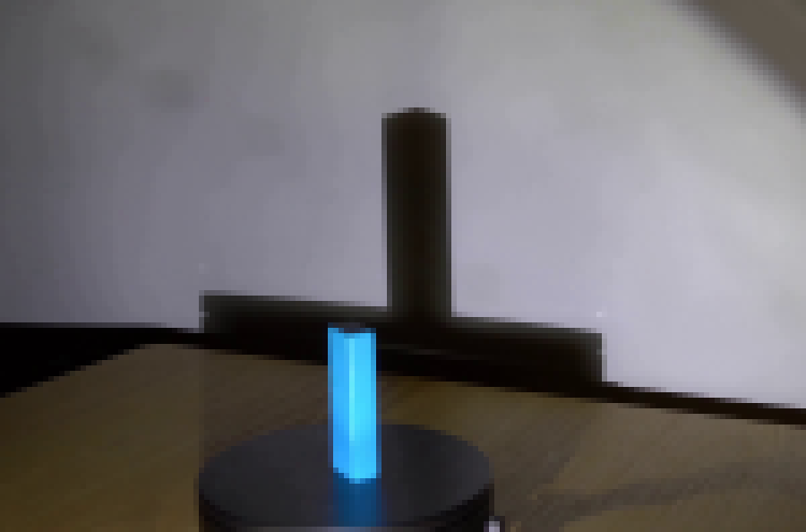
视觉工具实际返回图片 4
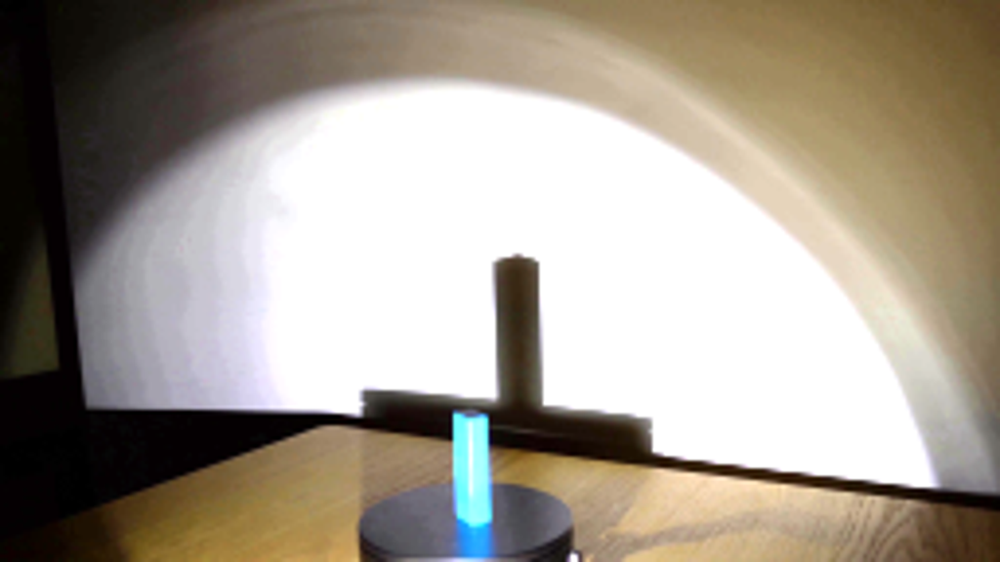
视觉工具实际返回图片 5
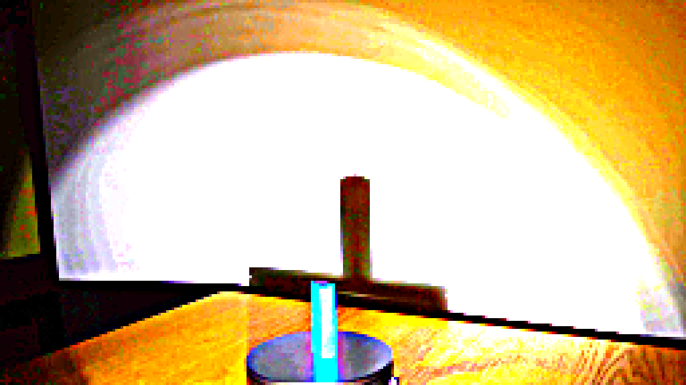
视觉工具实际返回图片 6
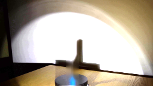
视觉工具实际返回图片 7
视觉工具实际返回图片 8
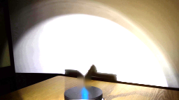
视觉工具实际返回图片 9
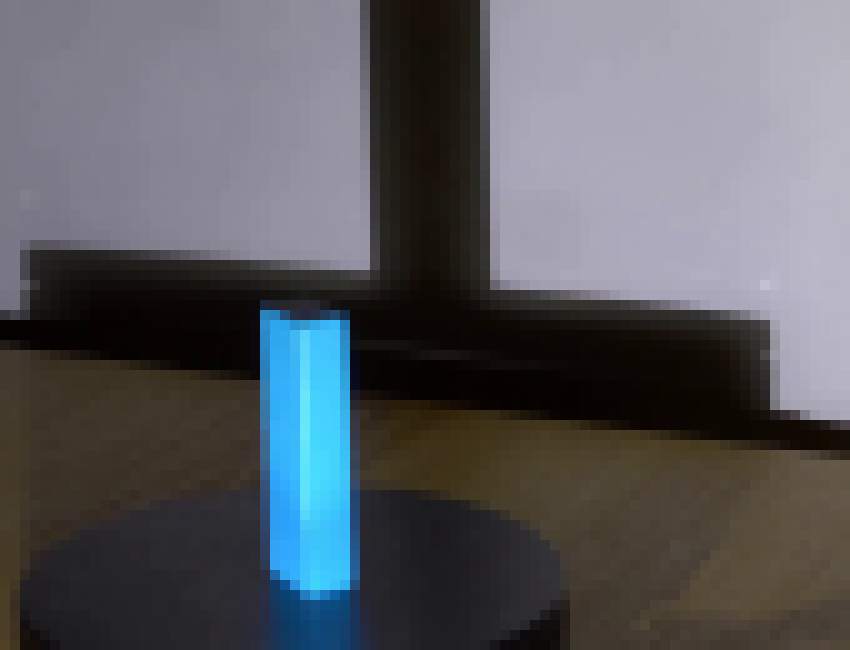
视觉工具实际返回图片 10
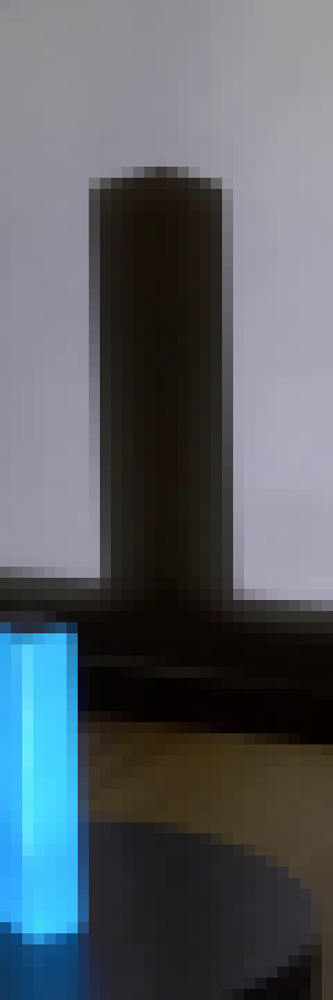
视觉工具实际返回图片 11
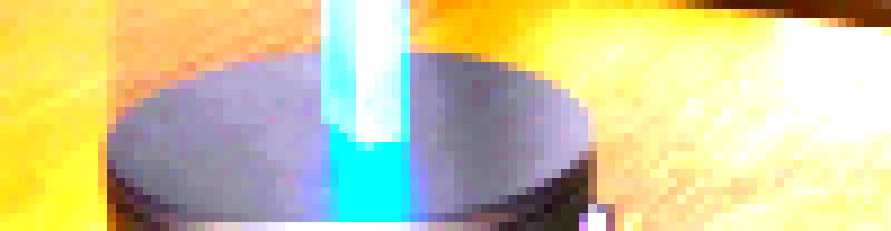
视觉工具实际返回图片 12
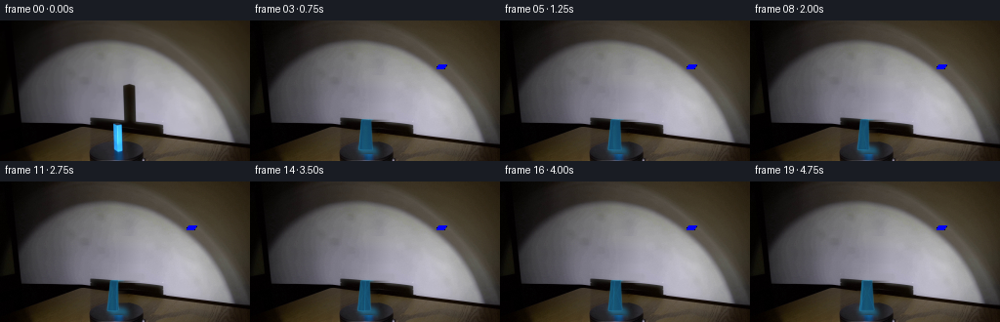
视觉工具实际返回图片 13
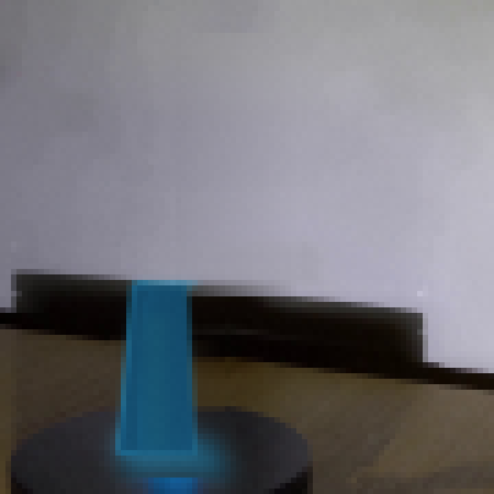
视觉工具实际返回图片 14

视觉工具实际返回图片 15
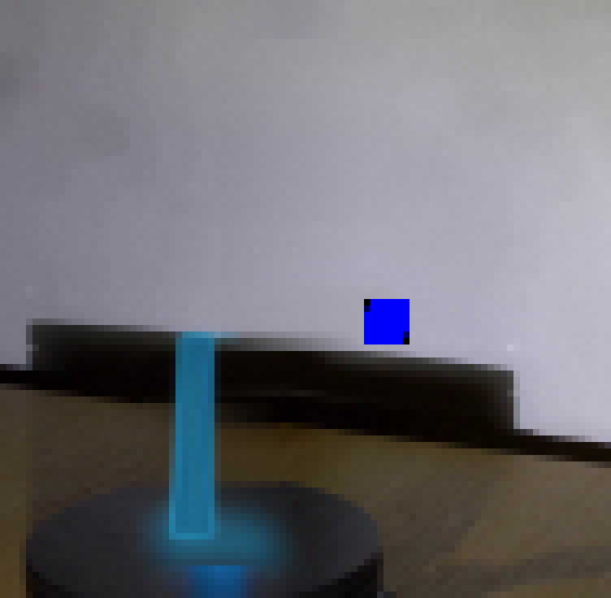
视觉工具实际返回图片 16
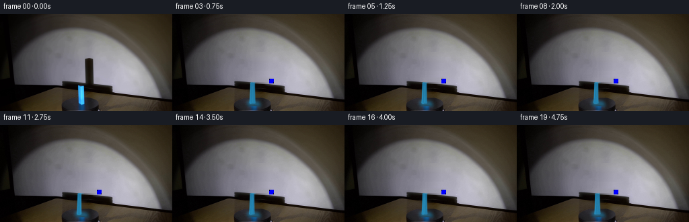
视觉工具实际返回图片 17
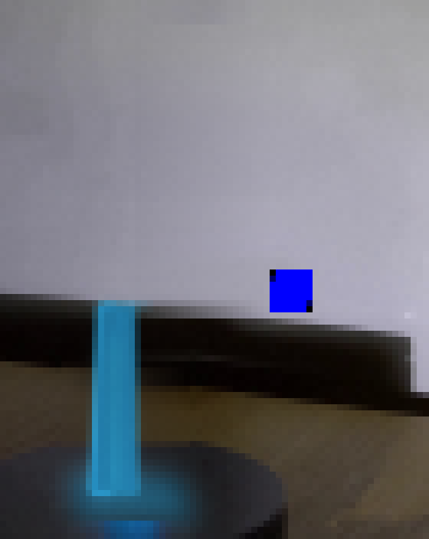
视觉工具实际返回图片 18
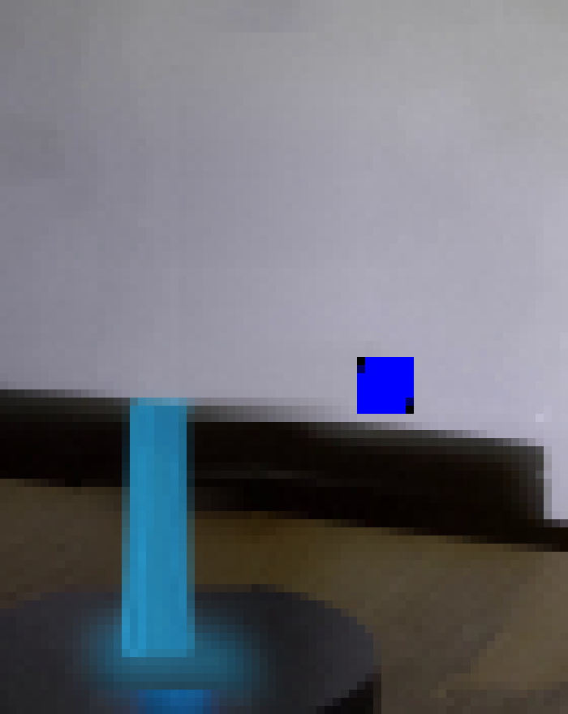
视觉工具实际返回图片 19
视觉工具实际返回图片 20
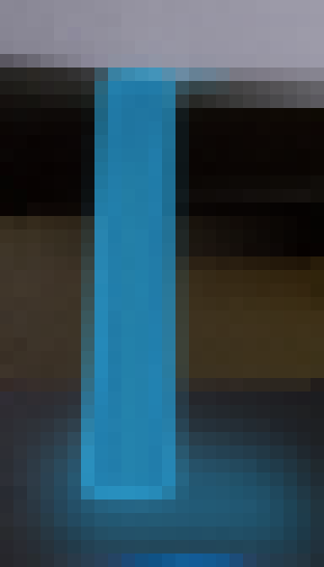
保存候选 4 份；完成命令 72 次；可验证图片返回 20 张。原始 API 响应与完整日志保留在本地。